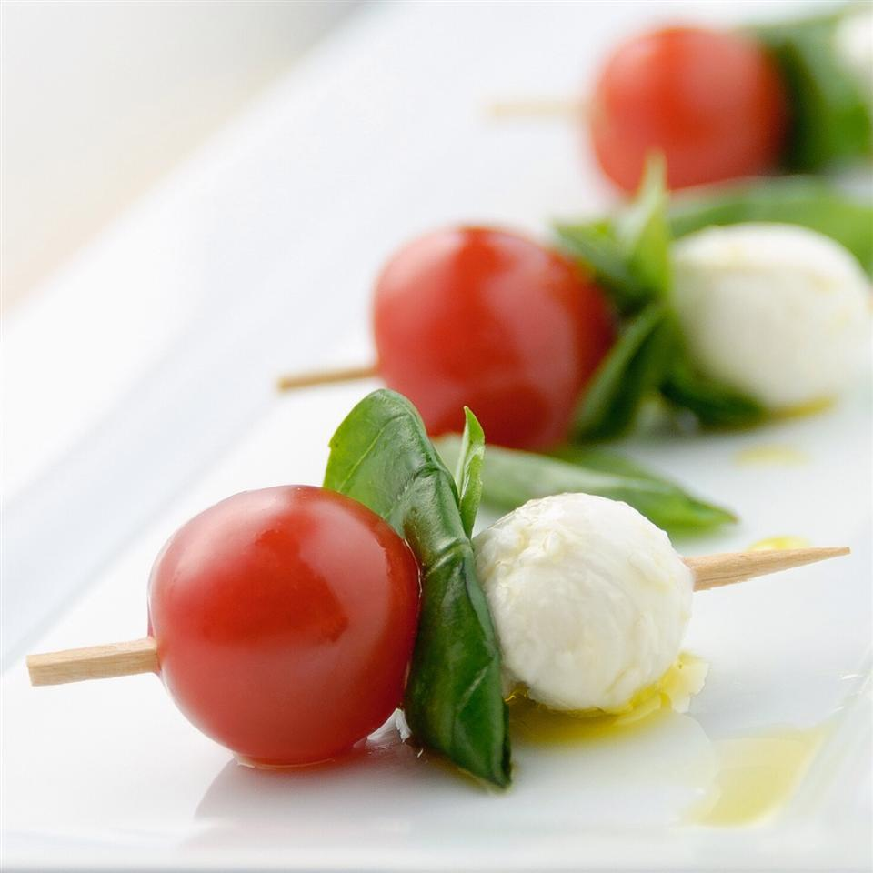

HOME
Caprese on a Stick

An easy, no-cook appetizer, great for summer parties!
Ingredients:
- 1 pint cherry tomatoes
- 0.6 ounce fresh basil leaves
- 10 ounce small fresh mozzarella balls
- toothpicks
- 3 tablespoons olive oil
- salt and pepper to taste
Steps:
- Cut each cherry tomato in half
- Stick a tomato half, a small piece of basil leaf, and a mozzarella ball onto a toothpick
- After all ingredients are used, drizzle all with olive oil, avoiding the end of the toothpicks.
- Add salt and pepper to taste.
- Serve immediately.